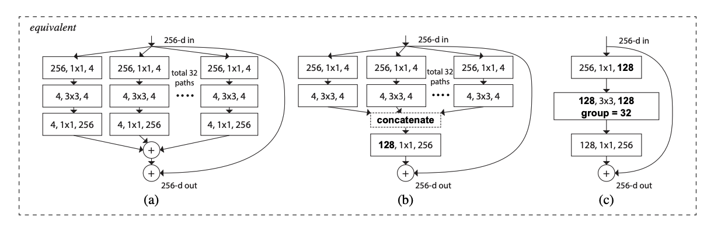
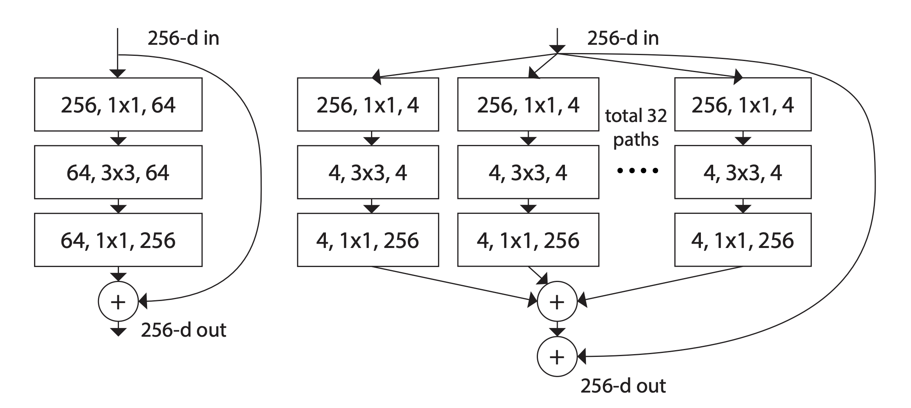
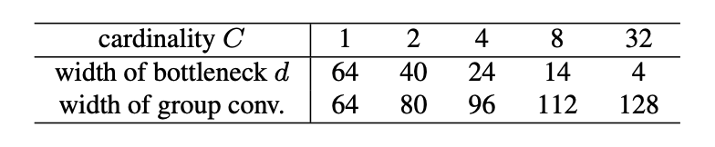
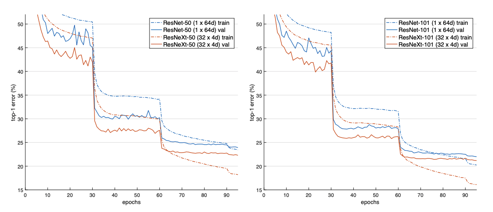
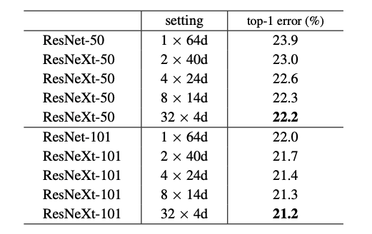
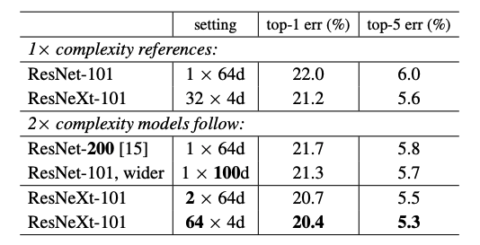
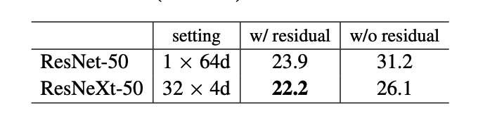
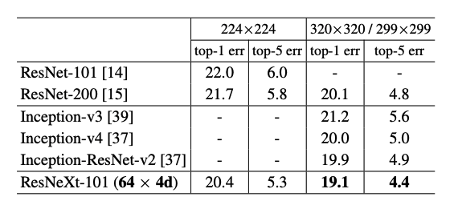
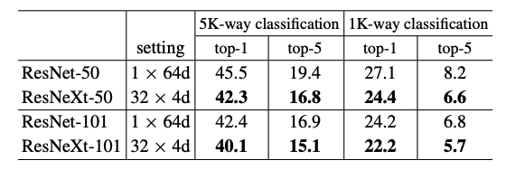

ResNext (2) - 2016
- 좀 더 깊이 살펴보는 ResNeXt 😄
- ResNeXt block 작동 방식과 실험 결과 Review 🐋
- 바로 저번 포스팅에 이어서 ResNeXt를 살펴 보도록 하겠습니다. 아래 그림을 보실까요!

- 위의 그림에 나오는 (a), (b), (c)는 모두 같은 ResNeXt block을 서로 다르게 표현한 것입니다. (b)는 Inception-ResNet Block과 상당히 비슷해 보입니다.
- 그러나, Inception-ResNet과는 다르게 모든 Path들이 같은 모양을 취하고 있다는 점에서, Inception의 경우 각각의 path의 모양을 신경쓰느라 들어야 했을 수고를 덜 수 있다는 장점이 있습니다.
Relation to Grouped Convolutions
- (b)의 형태는 다시 grouped convolution을 사용하면 더 간결한 (c)의 형태로 표현할 수 있습니다. (b)의 첫 번째 layer로 나오는 32개의 $256, 1\times1, 4$ low-dimensional embeddings들이, 더 Wide한 하나의 $1 \times 1, 128$-d layer로 대체되었습니다.
- 그대신, Splitting은 input과 output channel이 모두 4인, 32개 group의 grouped conv에서 수행됩니다. 그리고 grouped conv는 output을 내놓으면서 concatenation도 같이 수행해버립니다.😮
- 자, 그래서 (c)에 나오는 모습을 보자니, 상당히 original bottleneck residual block 같이 생겼습니다. 그러나 좀 더 넓고, 더 sparse하게 연결되어 있는 모듈이라는 점이 차이점입니다!
Discussion 🍵
- (a)의 reformulation의 형태인 (b) - concatenation, (c) - grouped conv는 $T_i$가 Inception block처럼 heterogenous. 즉, 혼합적인 형태의 모양일 경우 항상 잘 작동하지는 않는다고 합니다.
- 그렇기 때문에 homogenous한 형태로 구현이 심플하고 확장성이 뛰어나게 만들었고, 그런 점에서 (c)의 형태가 쉬운 구현에 많이 도움이 되었다고 합니다.
3.4. Model Capacity
- 자, 그럼 실제로 모델의 Complexity. 즉, parameter 수는 유지하면서 Cardinality만 다르게 가져가는 방식은 어떻게 가능한지에 대해 설명해보겠습니다. 이해를 돕기 위해서 저번 포스팅에 나왔던 그림들 다시 아래에 가져왔습니다.

ResNet bottleneck block(left), ResNeXt block (right)
둘 다 같은 feature map size를 가진다고 전제한다면, 왼쪽의 ResNet block의 경우 Prameter를 계산하면, $256 \cdot64 + 3\cdot3\cdot64\cdot64+ 64\cdot256 \approx70k$가 생성됨을 알 수 있습니다.
반면 오른쪽 ResNext block은 아래의 표에서 가장 오른쪽에 해당하는 $C=32$, width of bottleneck $d=4$, width of group conv.$=128$인 경우인데요,

Relations between cardinality and width
아래의 공식에, 위의 표에 해당하는 다양한 조합을 넣고 계산을 해도 결과에는 영향을 미치지 않을 정도로 근소한 차이만 있을 뿐, 모두 대략 $70k$의 parameter의 계산량을 가진다는 것을 확인할 수 있습니다.$$C \cdot (256 \cdot d + 3\cdot 3\cdot d\cdot d + d\cdot 256)$$
4. Implementation details
모델 구성과 학습 Hyperparameter에 대해 간략히 정리하면 아래와 같습니다.
모델 구현
- ResNeXt block은 Figure 3의 (c)의 grouped conv.의 형태로 구현. (c)가 다른 구현체들 보다 간결하고 속도가 빠름.
- Block의 output 부분에서 identity와 합치고 난 뒤에 ReLU를 수행한 거 빼고는, block 안의 모든 conv는
Conv - BN - ReLU순서로 구성하였다.
Hyperparameter
- Optimizer: SGD
- Batch size: 256 on 8 GPUs
- Weight decay: 0.0001
- Momentum: 0.9
- LR Schedule:
Start from 0.1 and divide it by 10 32k and 48k iterations. - Weight Init: PReLU weight init
5. Experiments 🔬
5.1. Experiments on ImageNet-1k
- 먼저 1000-class를 구별하는 2015 ImageNet classification 데이터의로 진행한 실험의 결과를 먼저 보시겠습니다.
- Cardinality를 제외한 모델의 Width, Depth를 같게 하기 위해서, 비교 대상인 ResNet-50/101 모델의 모든 Block을 단순히 ResNeXt Block으로 교체한 모델로 실험을 진행하였습니다.

- 보시다시피, 왼쪽의 50 layer 모델과 오른쪽 101 layer 모델들의 비교 결과 확실히 Train, Validation 두 경우 모두 ResNeXt가 성능이 더 좋은 것을 확인할 수 있었습니다.
Cardinality $\text{vs.}$ Width
- 아래는 모델의 모든 변수는 그대로 두고, Cardinality만 비교한 실험입니다.

- 위에서 살펴 본 Table의 Cardinality $C$와 bottleneck width인 $d$의 값을 그대로 모델로 구현하여 실험 하였더니, Cardinality가 높을수록 성능은 좋아지는 것을 확인할 수 있었습니다.
- 다만 $d$ 사이즈는 줄어들수록 성능이 개선되기는 하지만, 개전되는 정도도 점점 미미해지기 때문에 4보다 작게 만드는 것에는 의미가 없다고 판단하여 그보다 작게는 실험을 하지 않았다고 합니다.
Increasing Cardinality $\text{vs.}$ Deeper/Wider
- 이번에는 ResNet-101과 RexNeXt-101이 있을 때, 두 모델이 비슷하게 가지는 complexity, parameter 양을 기준으로, 그 complexity를 2배로 늘려봅니다.
- Complexity를 2배로 늘리는 방법을 더 깊은 모델(ResNet-200), filter size를 더 크게 가져가는 더 Wider한 모델(ResNet-101, wider), 그리고 ResNeXt로 Cardinality를 늘리는 방법. 총 3가지로 구현하고 그 결과를 비교해 봅니다.

- 역시나, 기준이 되는 1x complexity references 결과보다 모두 성능이 더 좋아졌지만, ResNeXt 모델의 Cardinality를 늘렸을 경우에 성능이 가장 좋은 것을 확인할 수 있습니다. 😎
- 더욱이, 같은 ResNeXt-101이지만 $d$보다 $C$가 더 높을 때 성능 또한 더 좋다는 것도 확인할 수 있습니다.
Residual connections
- 정말 다양한 실험으로 ResNeXt block의 성능을 검증하는데요. 이번에는 ResNet과 ResNeXt 각각을 Identity mapping이 없이 순수하게 Block만 비교해도 성능이 나아지는지를 검증한 결과입니다.

- 오른쪽 w/o residual의 결과를 통해, Residual connection이 없이도 ResNeXt의 표현력이 더 좋다는 것을 입증합니다.
Comparisons with state-of-the-art results
- 그동안 리뷰해왔던 Inception 모델들과도 성능을 비교하여 성능을 입증합니다.

5.2. Experiments on ImageNet-5K
- ImageNet의 5000가지 클래스를 구별하는. 1K보다 이미지의 양도 5배 정도 되는, 보다 어려운 task에서도 성능 실험을 하였습니다. 5K의 경우 공식적으로 제공되는 train/val set이 없기 때문에 1K의 validation set으로 테스트를 진행하였습니다.

5K-way classification은 5000가지 예측을 내놓고 1K에 해당하지 않으면 모두 실패로 처리하는 것이고, 1K-way classification은 test를 실시할 때, 마지막에 softmax를 추가하여 예측을 하게 하는 방식입니다.
위 실험 결과에서 우리는 1K-way classification의 방식에서 1K 데이터로 학습했던 5.1.의 실험결과보다, ResNeXt-101 모델이 더 많은 격차인 2.0%의 성능차이를 내는 것을 볼 수 있습니다.
이 또한, 더욱 많은 데이터들이 가지고 있는 Variance를 더 강력하게 표현할 수 있는 ResNeXt의 표현력을 반증하는 실험 결과라고 할 수 있겠네요 :)
5.3. Experiments on CIFAR
- CIFAR-10, 100 데이터로도 실험을 하였습니다만, 사실 이 부분에서는 딱히 괄목한만한 성능의 진전이 없습니다. 이유로는 아마 ImageNet의 경우처럼 ResNeXt가 빛✨을 발하기에 충분한 양의 데이터셋이 아니라서가 아닌가라고 저자는 말하고 있습니다.
- 여기까지 읽느라 수고하셨습니다. 이상으로 ResNeXt 리뷰를 마치도록 하겠습니다. 읽어 주셔서 감사합니다! 🙇
References
- ResNeXt paper